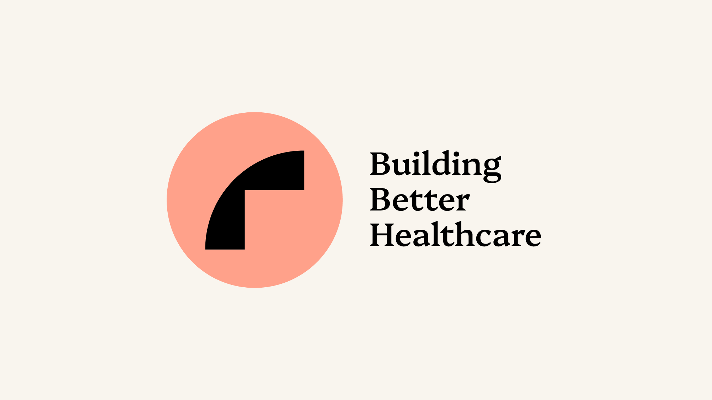
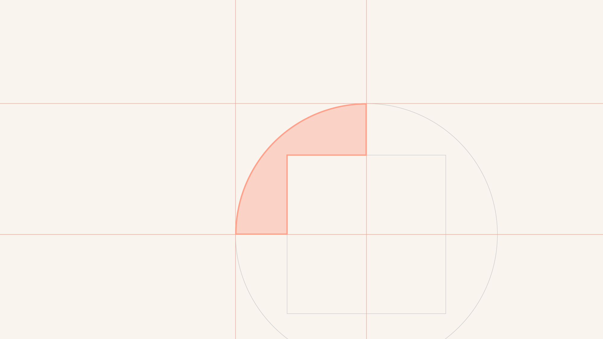
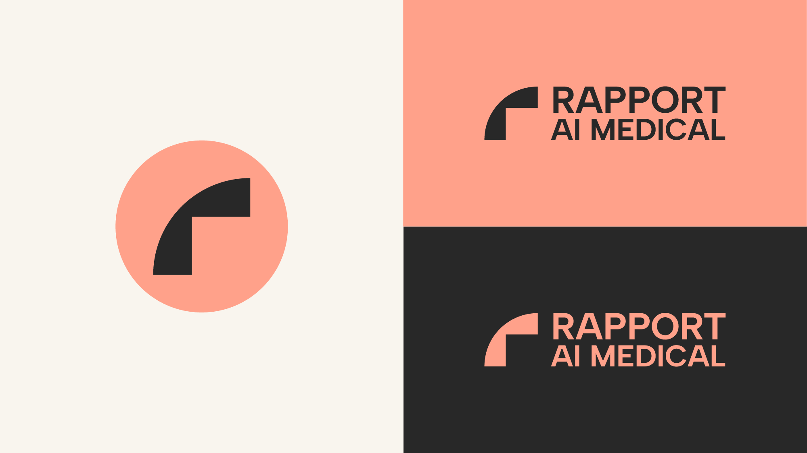
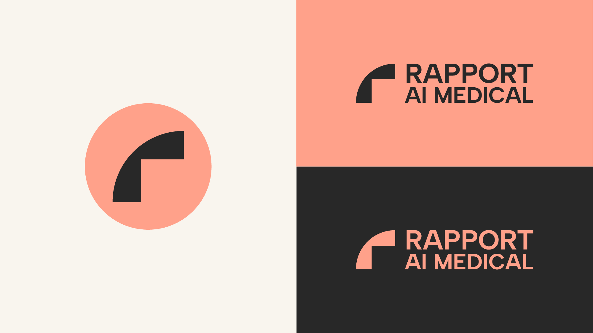
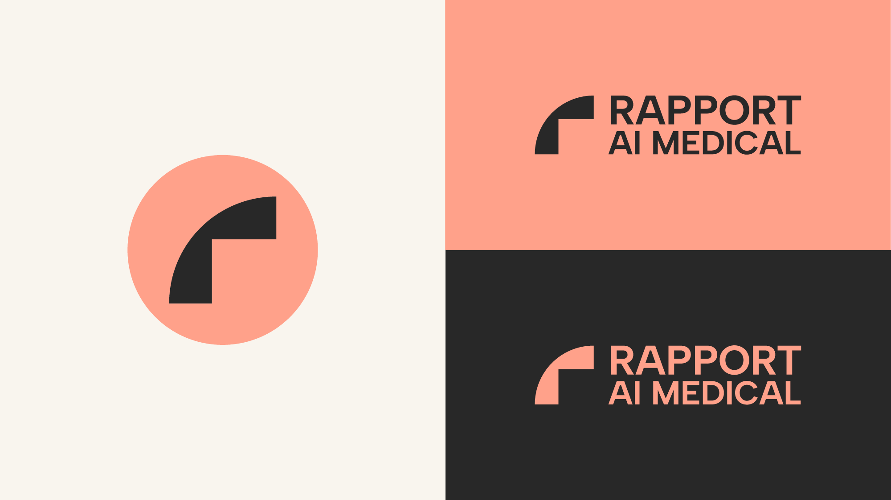
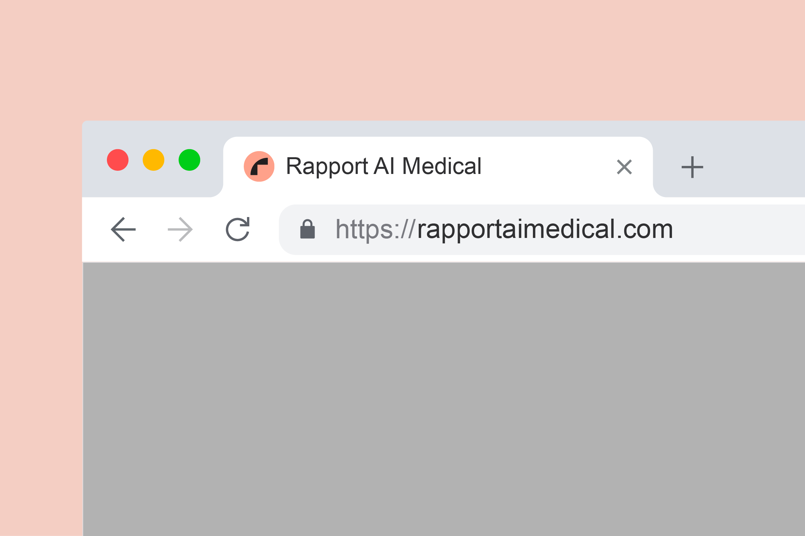

Rapport AI Medical is a B2B healthcare technology solutions platform with a mission to improve the efficiency of the currently stagnant and cumbersome healthcare system for both doctors and patients. They aim to support healthcare professionals by providing them with pre-diagnositic analytics and streamlining workflows; and improve patient experience and outcome at the same time.


 


Logo design


Launch page website


Expressive Iconography